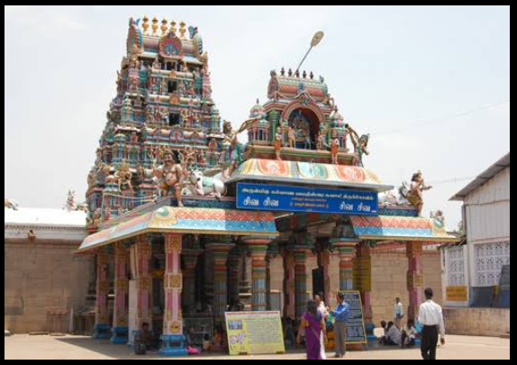

Pasupathyeeswarar Temple
The Pasupatheeswarar Temple is situated in Chidambaram, Cuddalore District, Tamil Nadu.
It is one of the ancient temples dedicated to Lord Shiva.
Festivals Celebration
1. Maha Shivaratri and Margazhi Thiruvadhirai are celebrated grandly.
2. Annual temple festivals attract devotees from nearby regions.

Main Deity: Lord Shiva, worshipped here as Pathupatheeswarar.
The name means “Lord of Ten Directions” (Pathu = Ten, Patheeswarar = Lord Shiva).
Goddess Parvati is also worshipped here as Periyanayaki Amman.